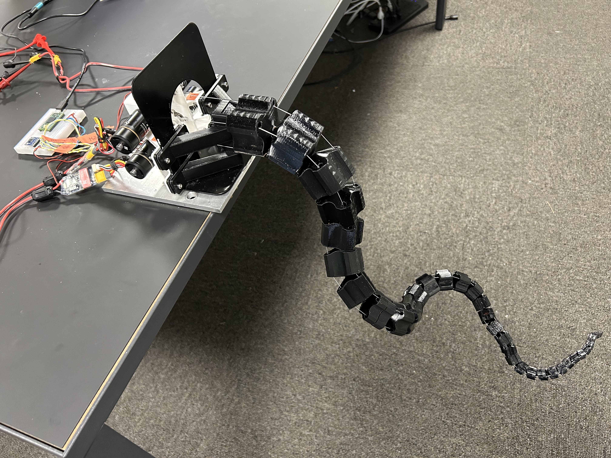

Robotic Tentacle
MIT Biomechatronics Lab

What?
- Developed 3-D printed robotic tentacle
How?
- Used FDM, SLS, and SLAstrong> 3D printing to fabricate parts
- Utilized different printable materials and print in place technology for efficient designs
- Worked with Autodesk APIstrong> for custom parametric modeling of tentacles
Results
- Created a robotic arm capable of 360 degree motion with only four actuators
- Developed program for consistent control and manipulation